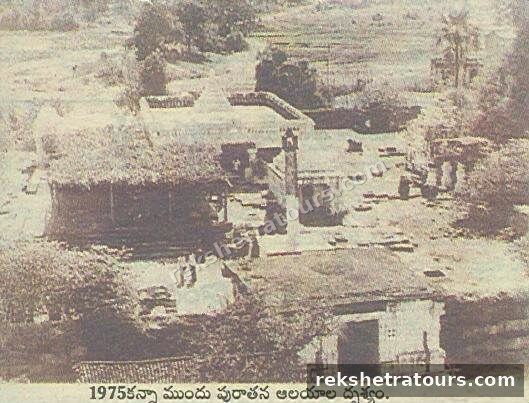

కాళేశ్వరం మరియు పరిసర పవిత్ర క్షేత్రాలు, దేవాలయాలు, తీర్థాలు, నదులు మరియు పర్యాటక ప్రదేశాలను పరిచయం చేసే ఆధ్యాత్మిక పర్యాటక సమాచారం.
కాళేశ్వర ముక్తేశ్వర క్షేత్రము (పంచక్రోశ పరిక్రమణ)
దక్షిణకాశీగా ప్రసిద్ధి చెందిన కాళేశ్వరమును యమధర్మరాజు నిర్మించాడని కాశీ క్షేత్రం కంటే కాళేశ్వరం ప్రమాణములో గొప్పదని స్కాంద పురాణాంతర్గత సనత్కుమార సంహితలోని కాళేశ్వర ఖండము ద్వారా తెలియవచ్చుచున్నది. కాశీలో జీవుడు మరణించటంవల్ల ముక్తుడగును కానీ ముక్తేశ్వరుడిని స్మరించిన లేక దర్శనము వలననే ముక్తుడవుచున్నాడు. ఒకే పానవట్టముపై రెండు లింగములుండుట ఇచటి గొప్పతనముగా చెప్పవచ్చు. కాశీలో గంగ ఉత్తరముగా పంచక్రోశములు ప్రవహించును. అదేవిధంగా ఇచట గోదావరి పంచక్రోశములు పొక్కురు నుండి చెన్నూర్ వరకు ప్రవహించుచున్నది.
కాశీ క్షేత్రంలో యాత్రికులు పంచక్రోశ యాత్ర మణికర్ణికా ఘాట్ నుండి ప్రారంభించి 98 కిలోమీటర్లు ప్రయాణించి 5 రోజులు మరియు 109 ముఖ్యమైన దేవాలయములు దర్శించి తిరిగి మణికర్ణికా ఘాట్ వద్ద యాత్ర సమాప్తి చేస్తారు. పూర్వకాలములో కాళేశ్వరం నుండి పంచక్రోశ పరిక్రమ చేసెడివారు.

పరిక్రమణ క్రమం / Traditional Sequence
యమకుండంలో స్నానం → ఆది ముక్తేశ్వర దర్శనం → సంగమ స్నానం → సంగమేశ్వర దర్శనం → ముక్తేశ్వర దర్శనం → మార్గంలోని వివిధ క్షేత్రాలు మరియు తీర్థాల దర్శనం → కాళేశ్వర ముక్తేశ్వర స్వామి సన్నిధిలో పరిక్రమణ పూర్తి.
Yamakundam Snanam → Adi Muktheeshwara Darshan → Sangama Snanam → Sangameshwara Darshan → Muktheeshwara Darshan → sacred kshetralu and theerthalu along the route → completion at Sri Kaleshwara Muktheeshwara Swamy.
మరిన్ని వివరాలు: ఆది ముక్తేశ్వరుడు · కుబేర సంగమం · కుశ తీర్థం · త్రివేణి సంగమం · పూజలు & సేవలు · దర్శన సమయాలు
తెలుగు – పంచక్రోశ పరిక్రమణ
పంచక్రోశ గోదావరి పరిక్రమణ కాళేశ్వరం పవిత్ర ప్రాంతానికి సంబంధించిన ఆధ్యాత్మిక యాత్రా సంప్రదాయాన్ని పరిచయం చేసే ఒక ముఖ్యమైన పుణ్యయాత్ర మార్గం. గోదావరి–ప్రాణహిత నదుల సంగమ ప్రాంతమైన కాళేశ్వరం శ్రీ కాళేశ్వర ముక్తేశ్వర స్వామి ఆలయంతో పాటు అనేక శైవ, వైష్ణవ మరియు ఇతర పవిత్ర క్షేత్రాలు, తీర్థాలు, నదీ ఘాట్లు, ప్రకృతి మరియు పర్యాటక ప్రదేశాలకు ప్రసిద్ధి చెందింది.
పరిక్రమణలో గోదావరి స్నానం, సంగమ దర్శనం, ఆలయ దర్శనాలు, పవిత్ర తీర్థాల సందర్శన మరియు మార్గంలోని వివిధ క్షేత్రాలను దర్శించడం వంటి ఆధ్యాత్మిక కార్యక్రమాలు ఉంటాయి. ఈ పేజీ భక్తులు మరియు పర్యాటకులు పంచక్రోశ పరిక్రమణకు సంబంధించిన క్షేత్రాలు, తీర్థాలు మరియు ప్రయాణ సమాచారాన్ని ఒకే చోట తెలుసుకోవడానికి రూపొందించబడింది.
English – Panchakrosa Godavari Parikrama
Panchakrosa Godavari Parikrama – Kaleshwaram presents information about the sacred pilgrimage tradition associated with the Kaleshwaram region. Located at the confluence of the Godavari and Pranahita rivers, Kaleshwaram is known for Sri Kaleshwara Muktheeshwara Swamy Temple and a network of sacred temples, kshetralu, theerthalu, river ghats and tourism attractions.
The pilgrimage information includes Godavari Snanam, sacred river confluences, temple visits, theertha darshan and other spiritual destinations along the traditional circuit. This page is designed to help pilgrims and tourists understand the sacred places, route information and tourism potential of the Kaleshwaram region.
🛕 పంచక్రోశ పరిక్రమణలోని క్షేత్రాలు
- గోదావరి స్నానం
- సంగమేశ్వరుడు – కాళేశ్వరం
- శ్రీ కాళేశ్వర ముక్తేశ్వర స్వామి దర్శనం
- ఆది ముక్తేశ్వరుడు
- కుబేర సంగమం
- అంబటిపల్లి అమరేశ్వరుడు
- శివ నారాయణ క్షేత్రం – సూరారం
- మంధరగిరి వేంకటేశ్వరుడు
- ఉమా మహేశ్వర లింగం – మహాదేవపూర్
- ఎలకేశ్వరుడు – ఎడపల్లి
- అన్నపూర్ణ పుష్కరేశ్వరుడు – దామరకుంట
- కత్తరసాల మల్లన్న
- సప్తకోటేశ్వరం – కోటేశ్వరుడు, నారాయణపూర్
- విశ్వేశ్వర లింగం – నారాయణపూర్
- రామేశ్వర లింగం – గోదావరి రేవు, చెన్నూరు
- అంబ అగస్తేశ్వర లింగం – చెన్నూరు
- సర్పాకార నరసింహ క్షేత్రం – అక్కిపల్లి
- రత్నాచల భైరవుడు – పారుపల్లి
కాళేశ్వర ముక్తేశ్వర క్షేత్రము (పంచక్రోశ పరిక్రమణ)
దక్షిణకాశీగా ప్రసిద్ధి చెందిన కాళేశ్వరమును యమధర్మరాజు నిర్మించాడని, కాశీ క్షేత్రం కంటే కాళేశ్వరం ప్రమాణములో గొప్పదని స్కాంద పురాణాంతర్గత సనత్కుమార సంహితలోని కాళేశ్వర ఖండము ద్వారా తెలియవచ్చుచున్నది.
కాశీలో జీవుడు మరణించటం వల్ల ముక్తుడగును, కానీ ముక్తేశ్వరుడిని స్మరించినా లేక దర్శనము వలననే ముక్తుడవుచున్నాడు.
ఒకే పానవట్టంపై రెండు లింగములుండుట ఇచటి గొప్పతనముగా చెప్పవచ్చు.
కాశీలో గంగ ఉత్తరముగా పంచక్రోశములు ప్రవహించును. అదేవిధంగా ఇచట గోదావరి పంచక్రోశములు పొక్కురు నుండి చెన్నూర్ వరకు ప్రవహించుచున్నది.
కాశీ క్షేత్రంలో యాత్రికులు పంచక్రోశ యాత్ర మణికర్ణికా ఘాట్ నుండి ప్రారంభించి 98 కిలోమీటర్లు ప్రయాణించి, 5 రోజులు మరియు 109 ముఖ్యమైన దేవాలయములు దర్శించి, తిరిగి మణికర్ణికా ఘాట్ వద్ద యాత్ర సమాప్తి చేస్తారు. పూర్వకాలములో కాళేశ్వరం నుండి పంచక్రోశ పరిక్రమ చేసెడివారు. యాత్రికులు ముందుగా యమకుండములో స్నానం చేసి, ఆది ముక్తేశ్వరుడిని దర్శించి, సంగమ స్నానమాచరించి, సంగమేశ్వరుడిని, ముక్తీశ్వరుడిని దర్శించి, పంచక్రోశ యాత్రలో భాగంగా వివిధ క్షేత్రములను తీర్థములను దర్శించి, ముక్తీశ్వరుడి సన్నిధిలో పంచక్రోశ పరిక్రమ సమాప్తి కావించెడివారని కాళేశ్వర ఖండము ద్వారా తెలియవచ్చుచున్నది.
భక్తులందరికీ విన్నవించునదేమనగా, ఈ క్రింద ఇవ్వబడిన పరిక్రమ మార్గమును అనుసరించి పంచక్రోశ పరిక్రమణను పునరుద్ధరించి ముక్తులవగలరు. మరియు శ్రీ కాళేశ్వర ముక్తీశ్వర కృపకు పాత్రులు కాగలరని కోరుచున్నాము.
సర్వే జనాః సుఖినో భవంతు ।
లోకాః సమస్తాః సుఖినో భవంతు ॥
🛕 Temples & Sacred Places – English
- Godavari Snanam
- Sangameshwara – Kaleshwaram
- Sri Kaleshwara Muktheeshwara Swamy
- Adi Muktheeshwara
- Kubera Sangamam
- Ambatpally Amareshwara
- Shiva Narayana Kshetram – Suraram
- Mandharagiri Venkateshwarudu
- Uma Maheshwara Lingam – Mahadevpur
- Elakeshwara – Edapalli
- Annapurna Pushkareshwara – Damarakunta
- Kattarasala Mallanna
- Saptakoteshwara – Koteswara, Narayanapur
- Vishweshwara Lingam – Narayanapur
- Rameshwara Lingam – Godavari Revu, Chennur
- Amba Agastheeshwara Lingam – Chennur
- Sarpakara Narasimha Kshetram, Akkipally
- Ratnachala Bhairava – Parupelli
💧 అష్ట తీర్థాలు / Eight Sacred Theerthalu
🗺️ ప్రతిపాదిత రివర్ఫ్రంట్ ప్రోమెనేడ్ ప్రణాళిక – అష్ట తీర్థాల స్థానాలు
మ్యాప్లో గుర్తించిన ప్రతి సంఖ్య పైన క్లిక్ చేసి ఆ తీర్థం వివరాలు చూడండి.
గమనిక: ఈ మ్యాప్లోని సంఖ్యలు ప్రతిపాదిత రివర్ఫ్రంట్ ప్రణాళిక క్రమంలో ఉన్నాయి; పరిక్రమణ క్రమం పై జాబితాలో చూడండి.
🛕 పరిక్రమణ క్రమం / Traditional Sequence
మీరు అందించిన చిత్రంలోని వివరాల ప్రకారం, పాత పంచక్రోశ పరిక్రమణలో యమకుండంలో స్నానం → ఆది ముక్తేశ్వర దర్శనం → సంగమ స్నానం → సంగమేశ్వర దర్శనం → ముక్తేశ్వర దర్శనం → మార్గంలోని వివిధ క్షేత్రాలు మరియు తీర్థాల దర్శనం → కాళేశ్వర ముక్తేశ్వర స్వామి సన్నిధిలో పరిక్రమణ పూర్తి చేసే విధానం వివరించబడింది.
According to the information shown in the supplied image, the traditional sequence is described as Yamkundam Snanam → Adi Muktheeshwara Darshan → Sangama Snanam → Sangameshwara Darshan → Muktheeshwara Darshan → visits to sacred kshetralu and theerthalu along the route → completion of the parikrama at Sri Kaleshwara Muktheeshwara Swamy.
🌿 పర్యాటక సమాచారం / Tourism Information
కాళేశ్వరం మరియు పరిసర ప్రాంతాలలోని దేవాలయాలు, క్షేత్రాలు, తీర్థాలు, నదులు, వంతెనలు, పార్కులు, ప్రకృతి ప్రదేశాలు మరియు ఇతర పర్యాటక ఆకర్షణల గురించి వివరాలను ఈ పేజీలో క్రమంగా చేర్చవచ్చు. ప్రతి ప్రదేశానికి చరిత్ర, ఫోటోలు, దూరం, Google Maps location, దర్శన సమయాలు మరియు ప్రయాణ సౌకర్యాలను కూడా జోడించవచ్చు.
This page can be expanded with history, photographs, distances, Google Maps locations, temple timings, travel routes, accommodation and local facilities for each destination.
🙏 Kaleshwaram
కాళేశ్వరం పుణ్యక్షేత్రం మరియు పంచక్రోశ గోదావరి పరిక్రమణకు సంబంధించిన ఆధ్యాత్మిక, సాంస్కృతిక మరియు పర్యాటక సమాచారాన్ని భక్తులు మరియు సందర్శకులకు సులభంగా అందించడం ఈ పేజీ లక్ష్యం.
Our aim is to present useful spiritual, cultural and tourism information about Kaleshwaram and the Panchakrosa Godavari Parikrama in one place for pilgrims and visitors.